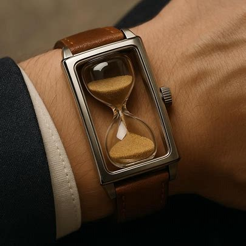
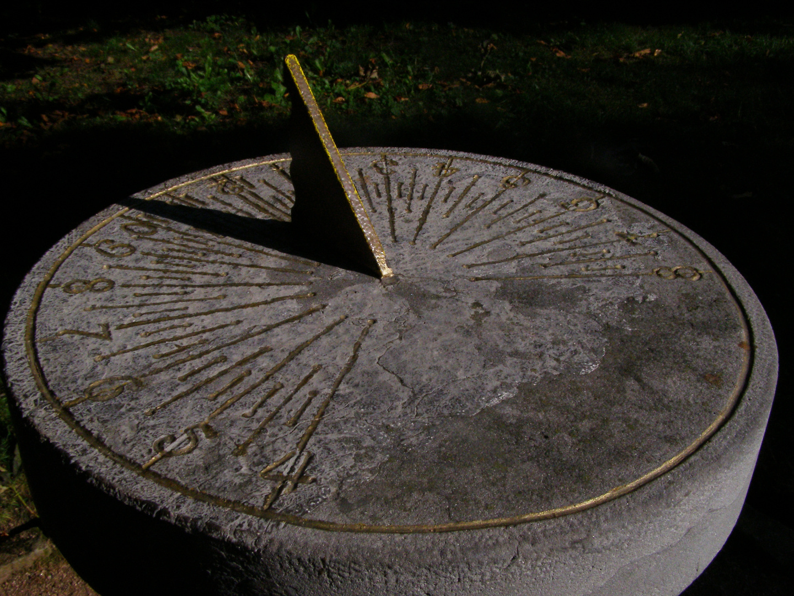
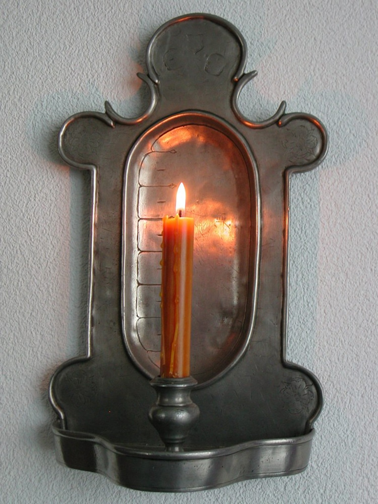

00:00:00
Unsere Uhrenmodelle

SandMaster Deluxe
Material: Diamant-verstärktes Glas
Wasserdicht: Nur bei umgedrehtem Zustand
Uhrwerk: Präzisions-Quarzsand aus der Sahara
Laufzeit: Exakt 7 Minuten und 23 Sekunden
Preis: 1.899€

SolarTime Professional
Material: Wetterfester Granit mit Goldeinlage
Wasserdicht: Komplett wasserfest, aber nicht regenfest
Uhrwerk: Patentierte Sonnenstrahl-Technologie
Genauigkeit: ±2 Stunden (wetterabhängig)
Preis: 2.499€

FlameTimer Exclusive
Material: Premium-Bienenwachs mit Titanspänen
Wasserdicht: Definitiv nicht empfohlen
Uhrwerk: Kontrollierte Abbrand-Mechanik
Betriebsdauer: 24 Stunden (Ersatzkerzen erhältlich)
Preis: 799€ (zzgl. Feuerschutzversicherung)